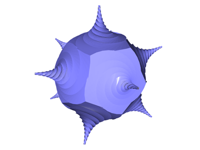

[1] 五角形の上にトゲっぽいものを作る
p clear ･･･ Points[ ]を空にする
p -1 0 0 ･･･ 点(-1,0,0)を追加する
p r 0 360/5 0 5 ･･･ 回転して正五角形の頂点をつくる
p2 p2p ･･･ P2[ ] → Points[ ] に5点をコピーする
p g r 0 10 0 s 0.95 1 0.95 t 0 -1/72 0 72 ･･･ 五角形を縮小しながら y方向(マイナス方向)に移動
surface pclose ･･･ 面をはる
p s 0 1 0 2 ･･･ トゲの先にフタをつくる
surface pclose ･･･ 面を張ってフタを閉じる
save pentagon.ply ･･･ plyとして保存する
[2] 正 12 面体をつくるスクリプトをコピー～改造
data/dodecahedron.txt をコピーする
以下の改造を行う(2か所)
(変更前) polygon 5 1 -0.01
↓
(変更後) l pentagon.ply
改造したスクリプトをロード～実行する